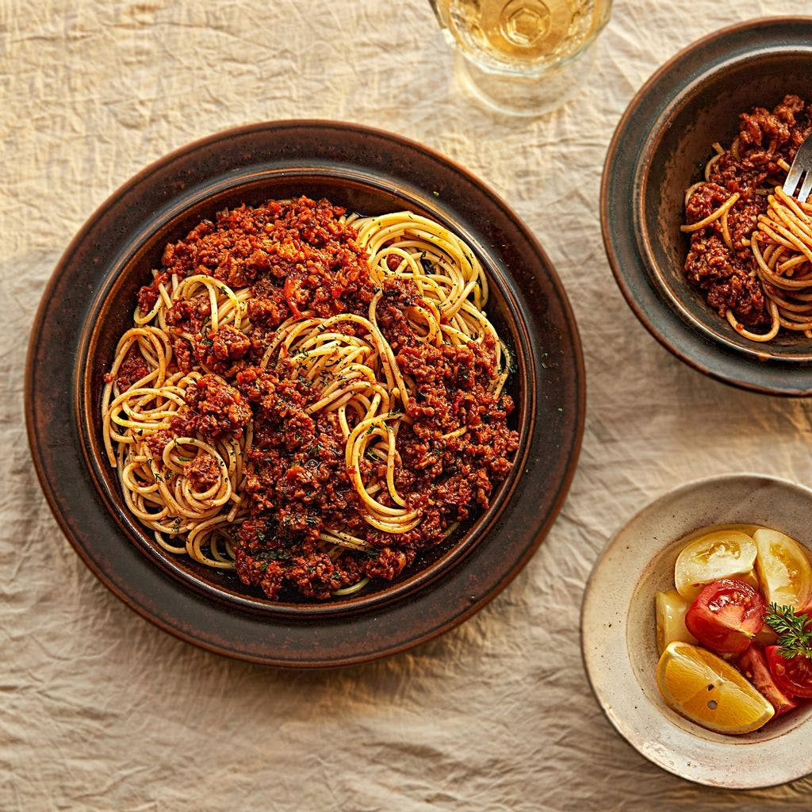

비건 볼로네제 파스타
건강에도 좋고, 환경에도 좋은 대체육으로 만드는 '비건 볼로네제 파스타 레시피'를 소개합니다.
고기보다 더 고기같은 식감의 대체육과 영양소가 풍부한 야채가 듬뿍 들어가 더욱 깊은 풍미를 즐길 수 있습니다.
야채를 싫어하는 아이들의 까다로운 입맛도 사로잡을 수 있고, 한 번 가득 만들어 놓고 냉동 보관을 해두면,
두고두고 먹을수 있어 든든한 비건 볼로네제 소스예요.

기본 재료 : 2인분 기준
- 쇠고기 다짐육(대체육) 250g
- 스파게티면 180g
- 양파 1/3개 (60g)
- 샐러리 1/2대
- 화이트 와인1/3컵
- 홀 토마토 1캔 (400g)
- 월계수 잎 2장
- 다진 마늘 1큰술
- 후춧가루 약간
- 올리브유 적당량
- 따뜻한 물 1/4컵
- 허브가루(바질,파슬리,오레가노 등) 약간
소스 재료 : 2인분 기준
- 비정제 설탕(원당) 1큰술
- 진간장 1큰술
- 식초 1큰술
- 소금 약간
조리 과정
- 1. 양파와 당근, 샐러리는 잘게 다져주세요.
- 2. 달군 팬에 올리브유를 두르고 양파가 갈색 빛이 돌 때까지 볶아주세요. 당근, 샐러리, 마늘을 넣어 살짝 볶아주세요
- 3. 대체육을 넣고 물기가 날아갈 때까지 볶아주다가 후추를 넣고 마무리 해주세요. (tip.고슬고슬한 소보로 질감이 되도록 볶아주세요)
- 4. 볶은 대체육에 와인을 넣고 알코올 향이 나지 않을 정도로 3~5분간 팔팔 끓여주세요.
- 5. 소스재료, 홀 토마토, 따뜻한 물을 넣어 으깨가며 저어주세요.
- 6. 끓는 물 1리터에 소금 1/2큰술을 넣고 스파게티면을 삶아 체에 밭쳐 물기를 빼주세요.
- 7. 접시에 스파게티 면을 담은 후 볼로네제 소스를 담아주세요.올리브유와 후춧가루, 파슬리를 살짝 뿌려 완성해주세요.